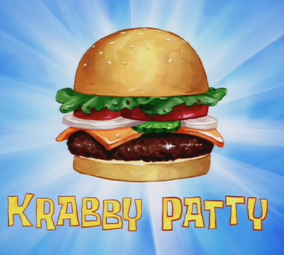

The Secret Krabby Patty Formula
If you want to make Krabby Pattys at home then follow
the secret recipe which was published on Nick.com!
Do not show this to Plankton!
Ingredients
- Seaweed buns
- Imitation crab meat patty
- Cheese
- Sea ketchup
- Sea Mustard
- Sea lettuce
- Sea tomato
- Sea pickles
- Sea Onion
- 2 teaspoons chopped celery
- 2 teaspoons chopped onion
- 4-6 tablespoons vegetable oil
- 1 teaspoons thyme